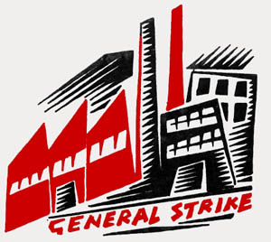

Another World Is Possible
Submitted on Mon, 04/21/2008 - 2:58pm
Disclaimer - The opinions of the author do not necessarily match those of the IWW. The image pictured to the right did not appear in the original article, we have added it here to provide a visual perspective. This article is reposted in accordance to Fair Use guidelines.
By Staughton Lynd - WORKING USA, March 2008
 What is the problem? What needs to be set right? The mother of all wrong solutions is card-check voting, which would give more access to unorganized workers for the same top-down unions, with the same unaccountability to the membership because of the dues checkoff, with the same ever-readiness to give up the right to strike. Equally misguided in my view is the notion that Taft-Hartley represented a decisive turning point and that its repeal would release the original pristine impulse of the Congress of Industrial Organizations to flower again. All major trade union leaders beginning with John L. Lewis have devised means whereby workers would give up the right to collective self-activity embodied in Section 7 in exchange for a mess of pottage. So we, labor lawyers and labor historians, can only begin to be useful when we forego our endless apologies for the latest hoped-for "progressive" union leader. Our task is to envision an institutional" "embodiment of the class self-activity discovered and imagined by E.P. Thompson and colleagues and partially realized by the IWW in work that desperately needs updating."
The new worldwide movement against "globalization," meaning, U.S. imperialism, and for a better day, has come up with a defining slogan: Another World Is Possible. The words remind us that a social movement is unlikely to bring about what it does not even try to achieve. Current efforts to revive the labor movement in the U.S. define their objectives so narrowly, that even if successful, they would not change anything fundamental.
One such proposal is to "increase the amount of money spent on "organizing" "to increase the percentage of the labor force that belongs to unions. Such an increase in union "density" might maximize the influence of existing unions, but would not change their entanglement in the management prerogative and no-strike clauses that exist in almost all collective bargaining agreements. These two clauses give profit-maximizing management the right to make the fundamental decisions and take away from workers the ability to do anything about it.
Another widely endorsed strategy is "card-check elections". If enacted into law, that procedure would very likely increase the number of bargaining units represented by existing unions. It would do nothing to change the top-down, bureaucratic character of those organizations. Indeed, in the absence of prolonged election campaigns and vigorous public controversy, card-check elections might very well cause unions to become even less democratic than they now are.
Moreover, experience suggests that in the absence of legislation, in order to obtain card-check elections unions often make significant concessions (about which the affected workers have no say) as to what will be in the contract after the union is recognized. A third widely articulated strategy is "minority or members-only unionism". The idea is that an employer should be required to bargain with any group of employees who request it, even if those workers are not a majority of the workforce. This is much the best mainstream formulation for improving the labor movement because it requires a union to prove its value through actions, not promises. However, the idea has significant drawbacks. Those who favor minority unionism see it as an intermediate step toward majority support and recognition of the union as exclusive bargaining agent.
Moreover, like so many other notions of labor law reform, it seems to require legitimation by some arm of government (such as Congress or the National Labor Relations Board) before it becomes real. Better than any of these strategic visions would be a deliberate return to the essential principle of the labor movement: the principle of solidarity. The Knights of Labor and the IWW articulated this principle of solidarity for all time in the words, "an injury to one is an injury to all." Certain applications of this principle are self-evident. For example, it would finally preclude the creation of separate wage tiers for workers who do essentially the same jobs and differ only with respect to their dates of hire. Again, it would require the labor movement to seek solutions that benefit "both "workers who seek to enter the U.S. "and "workers who are already here.1
In order to develop such solidarity unionism in practice, workers, labor historians, trade union officials, and labor lawyers must affirm the underlying idea that answers to the miseries presently experienced by workers in the U.S. (and elsewhere) will develop from the bottom-up, not from the top-down. We need to go back to the experience of workers in this country in the early 1930s who were unable to get help from either national unions or the national government, and who, therefore, turned to each other, improvising new central labor bodies to coordinate their local general strikes. Rather than seek assistance from the courts, they sought to get the judges off their backs, through the anti-injunction provisions of the federal Norris-LaGuardia Act and the little Norris-LaGuardia laws of a number of states. The indispensable precondition for a new bottom-up labor movement is to give up the quest for a magical new leader of the existing trade union movement who will make all well again.
Intellectuals associated with the labor movement have a special responsibility. In 1995, two labor historians circulated an Open Letter to President-elect John Sweeney, which greeted Sweeney's elevation as "the most heartening development in our nation's political life since the heyday of the civil rights movement," assessed his election as "promis[ing] to once again make the house of labor a social movement around which we can rally" and pledged "to play our part in helping realize the promise of October."2
When Andrew Stern later denounced Sweeney and led several major unions into a new organization, Barbara Ehrenreich declared that "the future of the American dream" was now "in the hands of Andrew Stern" possessing a "vital agenda for change" and "a bold vision for reform."3 This was presumably before Stern's coalition with Wal-Mart. The foregoing makes clear why it is so important to look again at John L. Lewis, to move beyond Saul Alinsky, Melvyn Dubofsky, David Brody, and Robert Zieger, indeed beyond the consensus of labor historians, concerning this paradigmatic figure. Here, the research of Jim Pope is the gateway to understanding the importance of rank-and-file activity as central to labor movement growth.4
As Pope states:
According to the standard story, section 7[a] of the National Industrial Recovery Act [made possible] a brilliant organizing campaign that reestablished the mine workers' union in the soft coalfields. The story begins in late May 1933, when UMW President John L. Lewis-anticipating the enactment of section 7(a)-commits the union's entire treasury. . . . One hundred organizers fan out into the coalfields . . . claiming "the President" wants the miners to join the union. . .
[W]ithin weeks of section 7(a)'s signing, the union enrolls the overwhelming majority of miners in the soft coalfields.
In this standard story, Pope rightly observes, "coal miners rarely appear and strikes-if they enter the story at all-play a subsidiary role," and are said to have been masterminded by Lewis.
Pope tells us that he began his research when the New York Times headline "Coal Men tell Roosevelt Code will be Signed Today: 16 Shot in Riots at Mines" caught his attention. Inquiry revealed that strike activity in the summer of 1933 involved 100,000 miners spread out over 1,000 miles of mountainous terrain. The self-activity of coal miners in southwestern Pennsylvania and West Virginia began before any initiative by Lewis and without his assistance. In Pope's words, they "brought their common law of solidarity into the realm of public struggle."
Section 7(a) "neither sparked the movement nor shaped its demands." By May 17, 1933, when the NIRA was presented to Congress, "the organizing upsurge in garment and coal was already in full swing."
>From self-organization, the miners moved on, according to Pope, to enforcement from below. Lewis advised miners not to strike because the real action would be in Washington and announced that strike activity was unauthorized. When President Roosevelt intervened personally to broker a truce, striking miners refused to return to work. UMW Vice President Philip Murray then entered into an agreement with the owners that banned all mass picketing.
The strikers, however, viewed picketing "not as a form of communication, but as an enforcement device."
The miners stayed out despite wage cuts and promised wage increases because Pope says what they wanted was "structural change" and a "new industrial order." The strikers organized themselves through pit committees that superseded the official UMW apparatus. Pope concludes:
Throughout the struggle, John L. Lewis had been a step behind the local union activists. His celebrated organizing campaign was not launched until after rank-and-file miners had already rejuvenated the union. Once deployed, his organizers worked persistently to undermine the strike movement. . . . Thus,
the sensational recovery of the UMW union - later touted by Lewis as a product of centralized discipline and federal government lawmaking - was in fact brought about by a democratic movement of local activists enforcing their own vision of the right to organize.
We must demythologize not only John L. Lewis, but also all such leaders including Philip Murray, Walter Reuther, Cesar Chavez, Arnold Miller, Ed Sadlowksi, Ron Carey, John Sweeney, and Andrew Stern, and we must reconceptualize rank-and-file movements as something more than caucuses to elect new bureaucratic union leaders.
The rank-and-file movements of the early 1930s ran candidates for office, but they also refused to accept collective bargaining agreements negotiated behind closed doors; initiated wildcat strikes, local general strikes, and a national textile strike; and did not shy away from the option of seceding to start new unions.
They believed, in the language of the antiglobalization movement, that another world is possible, and in the language of Karl Marx and Friedrich Engels, that they had a world to win.
Notes"
1. Historians routinely condemn Samuel Gompers for supporting the "exclusion" of Chinese workers at the end of the nineteenth century. When Tom Leedham, as the candidate of Teamsters for a Democratic Union for president of the International Brotherhood of Teamsters, criticized his opponent ( James Hoffa, Jr.) for not doing enough to keep Mexican truck drivers out of the U.S., he exhibited the same parochialism.
2. The letter was signed, among others, by Stanley Aronowitz, Derrick Bell, Barry Bluestone, Julian Bond, Barbara Ehrenreich, Eric Foner, Betty Friedan, Herbert Gans, Henry Louis Gates, Jr., Todd Gitlin, Michael Kazin, Jonathan Kozol, William Kornblum, David Montgomery, Arthur Schlesinger Jr., Michael Walzer, and Cornel West, who also hailed Sweeney as a "visionary leader." "The Rise of the House of Labor," "In These Times", December 25, 1995, p. 4.
3. Steve Early, review of John Sweeney, "America Needs a Raise", and Andrew Stern, "A Country That Works", in WorkingUSA: The Journal of Labor and Society", vol. 10, no. 1 (March 2007): 142.
4. "The Western Pennsylvania Coal Strike of 1933, Part I: Lawmaking from Below and the Revival of the United Mine Workers," Labor History, vol. 44, no. 1 (2003): 15-48.
"Staughton Lynd "is a leading social historian who has devoted his life to scholarship on the working class and social activism and solidarity. He is author of numerous books on labor, the working class, and the oppressed. He practiced employment law as a legal services attorney in Youngstown, Ohio. He is the author of "Solidarity Unionism "and edited "We Are All Leaders: The Alternative Unionism of the Early 1930s". He and his wife Alice Lynd authored "Rank and File "and "The New Rank and File". His recent work focuses on the cogency of social solidarity and worker self activity. He is author of "Lucasville: The Untold Story of a Prison Uprising". E-mail: salynd@aol.com